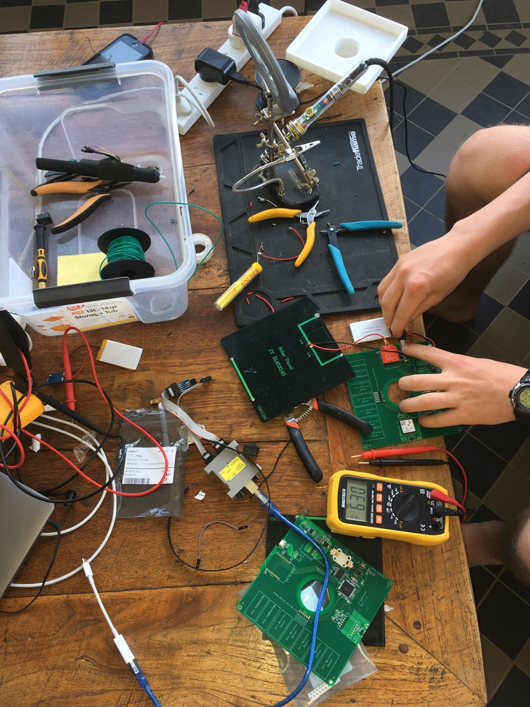

<div class="textcontainer">
<h3>About Me</h3>
<p class="margin"> </p>
<div class="center-row">
<p id="aboutme">
Hello! My name is Callum and I am a Senior at Harvard College. I am concentrating in Electrical Engineering and I am interested in anything to do with building electronics, specifically stuff with cows. I am excited to learn more about different fabrication methods I can use for building new products and how I can use it to challenge myself to come up with new solutions in the AgTech space.
</p>
</div>
<br></br>
I've loved building Arduino boards since I was about 16 on my farm. I've added some photos from these days—was definitely a nerd. Here are also some things I built over the years.
<div class="container text-center mt-4">
<div class="row">
<div class="col-md-6 mb-3">
</div>
<div class="col-md-6 mb-3">
</div>
</div>
<div class="row">
<div class="col-md-6 mb-3">
</div>
<div class="col-md-6 mb-3">

</div>
</div>
</div>
<!-- Maybe even add a video?
<br></br>
<video width="640" height="480" controls>
<source src="temp-video.mp4" type="video/mp4">
</video> -->
</div>